1. kafka同SparkStreaming的整合
1.1 src
1.1.1 SStreaming只能兼容0.8.2.1之后的kafka
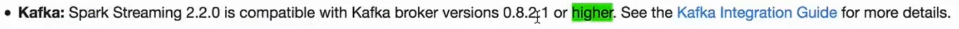
1.1.2 spark官方提供了2个maven依赖，一个是0-8，一个0-10，0-8兼容0.8之后的，但0-10不兼容之前的
1.1.3 1.6 + 0.8.2，2.3推荐1.0+，0.9一般不用
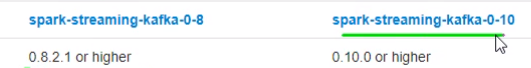
1.1.4 区别
{1} 代码层面，创建DStream不同，使用上都一样
{2} kafka高低阶API的区别就是offset如何维护，高阶是通过zk，低阶自定义
1.1.5 note
{1} kafka的partition和RDD的partition不同，
{2} 生产环境一般不联网不下载jar，使用--jars参数来指定jar
1.2 com
1.2.1 SStreaming从kafka获取数据有2种方式。
1.2.2 基于receiver的方式，底层使用kafka高阶API的，有可能会丢失数据，因为receiver先向zk提交当前批次数据的offset，然后再向driver申请调度，如果处理过程driver宕机，恢复后会从zk获取offset。为了避免这种情况，可以使用开启WAL机制，receiver额外向HDFS备份一份数据，这样即使宕机，也可以根据zk的offset从hdfs取数据
1.2.3 基于
1.3 1.6 + >0.8.0 有2种模式，Receiver模式
1.3.1 使用kafka高阶API，
{1} spark使用worker中的receiver接收数据，存到executor的内存中，默认会丢失数据。为了不丢失数据，需要开启WAL机制，WAL spark1.2后才有，
1.3.2 com
{1} 需要一个task作为receiver接收数据，也就是kafka的消费者。executor直接从kafka读数据，因为要一直读，所以需要一个receiverTask线程一直运行，专门干接收的事。
{2} 流程
[1] executor有线程池。只要消费者获取完数据，也就是Executor把数据接受完并按照持久化规则存到各个Executor的节点上，此时就要向zk上kafka的offset管理节点提交更新。
(1) receiverTask也是个task，也可以持久化，接收数据默认级别是MADS2，将数据备份到2台executor上。所以在数据接收这个阶段，数据丢失概率很小。
[2] 更新完offset，receiverTask会把数据备份的位置也就是持久化的位置汇报给driver，driver有了要处理的数据信息，就可以调度任务，开始处理数据
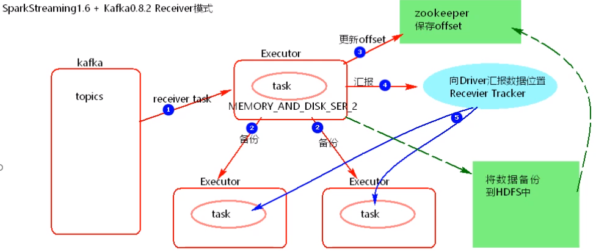
{3} 问题1：receiver模式,需要一个task一直处于接收数据的状态，接收来的数据存储级别MEMORY _AND_ DISK_ SER_ 2。这种模式下当Driver挂掉时, 同1个App下的Executor也会被Kill，Executor有可能有一部分数据未被处理，就存在丢失数据的问题。==》数据是接收成功就向zk提交offset，此时数据还没处理完，如果提交完但处理时宕机，就会丢失数据
[1] 开启WAL机制( Write Ahead Log )预写日志级别，将数据节点之间备份完成之后再向HDFS中备份1份，然后向zk提交offset，==》优点
(1) 持久化等级不需要带_2了，因为hdfs自带备份。
(2) 宕机恢复时，从hdfs读数据。==》开启WAL机制带来新的问题:加大了数据处理延迟,开启WAL机制
{4} 问题2：receiver模式底层读取kafka消费者的实现采用了high level consumer API，不提供维护offset的接口，只关心数据不能手动管理offset
1.3.3 receiver这种模式已经被废弃，新版本已经没有
{1} 采用了receiver接收器，要先把数据存到executor中再处理，再有任务堆积的情况下，内存占用更大
{2} 存在丢失数据的问题，开启WAL可以避免，加大了数据处理的延迟
{3} 底层采用了kafka高阶API来消费，不能手动维护offset，也就是不能指定offset的存储位置，不能指定offset消费。比如消费3个分区的topic，offset分别是100，90，80，想要从110，100，90开始消费做不到。
[1] 如果是处理日志数据，丢几条无所谓，但有些场景比如金融，要求数据不能丢，要求精确处理
{4} 不使用receiver模式还1个原因是因为receiver模式并行度，并行度由spark.streaming.blockInterval决定，不灵活，最小不能低于50ms
[1] 2个参数，blockInterval是每隔多久把数据封装为一个block，batchInterval是隔多久把这些block封装为1个batch。多个block封装为1个batch，1个batch封装为1个RDD，一个block对应RDD的1个partition，所以导致task的并行度会跟block一样，会很多
(1) batchInternal就是创建ssc时的参数2
[2] blockInterval如果过小，导致并行度过高，1个block的数据过小，task启动时间比处理时间不成比例。
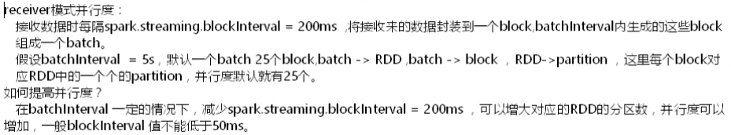
1.3.4 API
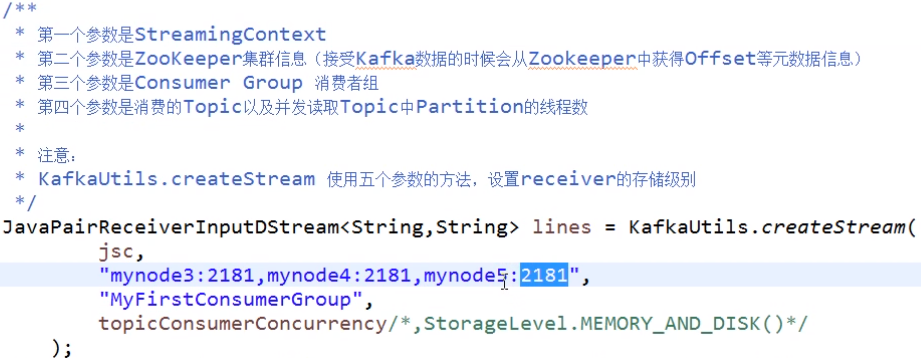
{1} 创建，需要传入zk地址。单纯创建不需要使用checkpoint。创建时需要指定消费者组，会自动创建
{2} 使用上没有特别之处。
1.4 1.6 + >0.8.0 direct模式
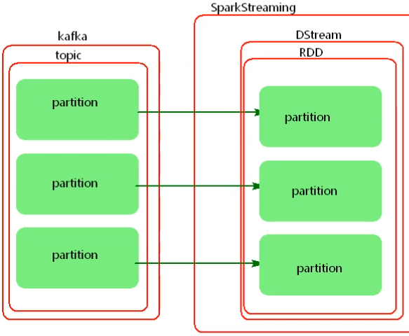
1.4.1 跟receiver相比
{1} 取数据方式不同。使用低阶API直接根据offset从kafka分区中读，可以手动管理offset。没有receiver，随处理随获取，内存占用少
{2} 并行度设置不同，并行度跟要读的topic的分区数相同，一个kafka topic的分区对应DStream中RDD的分区，是1对1的关系，后续想要改变分区数用算子改即可
{3} 不用zk管理offset，spark自己管理，默认将offset存在内存，如果设置了checkpoint，在checkpoint也会备份，也可以自定义保存到mysql或hdfs中。创建DStream时不需要zk
{4} 代码上
[1] 创建DStream不同
(1) checkpoint也不是必须，但因为内存中的数据重启之后就没了，所以实际上是必须的。创建DStream时有个构造器可以传入ck的路径，这样重启时就可以从ck获取上次的数据
(2) 用KifkaUtils.createDirectStream创建，不需要设置zk，receiver模式用createStream，需要设置zk。
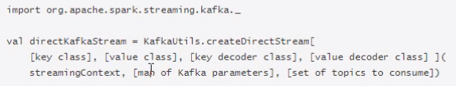
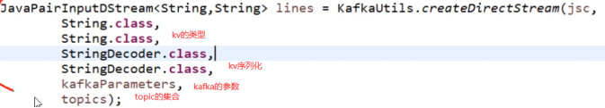
[2] 保存到ck时，不能修改逻辑，就不能重复使用checkpoint，所以一般不用==》手动维护，也可以把offset存到外部存储
[3] 手动维护
(1) 消费完获取offset并保存
transform算子用来对DStream中的RDD进行转换，相当于DStream的map，返回值也必须是RDD
RDD应该是继承了OffsetRange的特质，使用transform把RDD转成OffsetRange类型，然后就可以获取offsetRanges这个集合
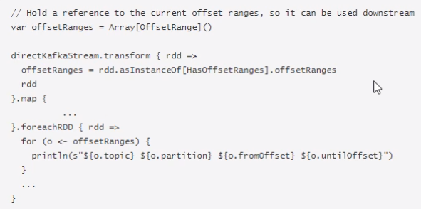
从rdd中可以获取当前RDD的消费信息，包括topic，partition，起止offset
(2) 下一次启动时，从中介存储中获取offset，然后创建DStream时把offset传入，跟driverHA的代码相同，这种方式可能会造成重复处理，因为数据以批为单位，上一批没处理完，这一批会从头开始消费。
1st TopicAndPartition指明topic和分区，Long指明offset
1.5 2.3 + >0.10之后，
1.5.1 com
{1} 只有direct模式，也不再分高低阶API。使用__consumer_offsets维护offset，不用zk
{2} 2.3的sparkStreaming的direct模式，和1.6的direct模式类似，只不过使用的kafka的API不同，2.3不再分高低阶，只有一个newAPI
1.5.2 kafka参数
{1} auto.offset.reset：sparkStreaming连接上kafka后，从哪里开始消费
earliest：各分区下有已提交的offset时，从提交的offset开始消费，无提交的offset，从头开始
latest：默认，从最新的offset开始消费，也就是连上kafka时，直接从kafka发来的开始消费
none：没找到以前的offset，就抛出异常
{2} enable.auto.commit：true时每隔一段时间自动提交offset，会有数据丢失的问题。false需要手动提交。
{3} heartbeat.interval.ms：表示kafka集群与consumer之间心跳间隔时间，这个值必须比session.timout.ms小，一般不大于session.timout.ms的1/3
{4} session.timout.ms：表示消费者与kafka之间的session会话超时时间，如果这个时间内没有收到消费者的心跳，会移除当前消费者，默认是30s。这个时间介于group.min.session.timeout.ms和group.max.session.timeout.ms之间，如果batchInterval大于5分钟，就要调大group.max.session.timeout.ms
1.5.3 offset的维护，在哪存，存取API？
{1} 如果设置了checkpoint，会存在checkpoint中。缺点
[1] 从ckp恢复数据时，有可能造成重复消费
[2] 代码逻辑改变时，ckp无法使用
{2} 使用kafka的系统topic，但__consumer_offsets数据有保存期限，默认24小时，如果宕机超过24小时，就没了。
{3} 自定义
[1] 从自定义存储查询topic，partition，offset，封装成TopicPartition对象，然后转成map
[2] 创建stream
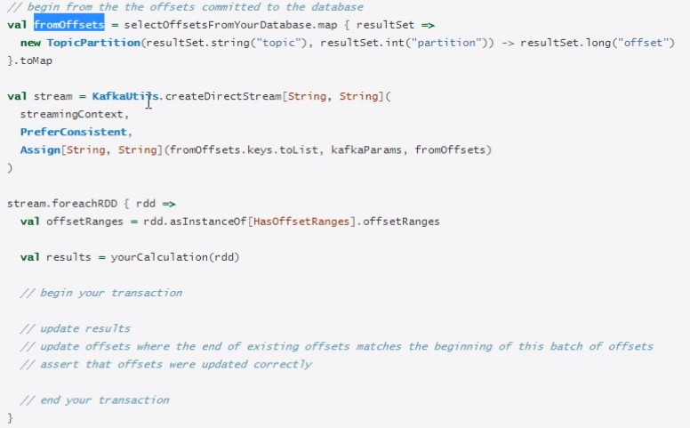
1.5.4 API
{1} 创建
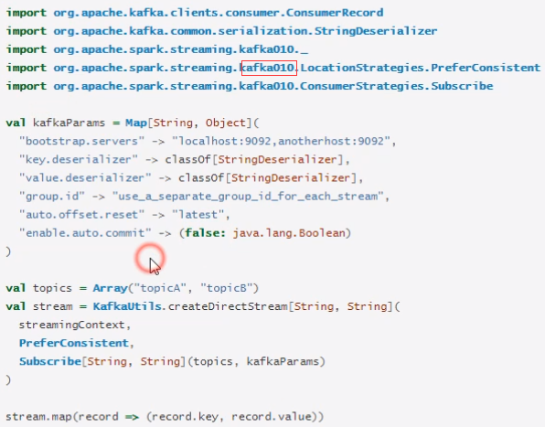
[1] 不需要传什么kv类型和节码类
[2] 消费策略，就是topic的分区在executor中如何分配
(1) 一般采用LocationStrategies.PreferConsistent策略，会将topic分区均匀分布在executor中，
(2) 如果spark的executor跟kafka的broker在同意节点上，可以使用PreferBrokers，则executor的数据从本地节点获取
(3) 如果节点之间的分区分布不均，可用PreferFixed，通过一个map指定topic分区和executor的分配
[3] Subscribe，包括主题和kakka配置
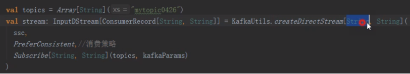
{2} 处理完后，更新offset。==》获取并异步提交offset
[1] 提交offset的stream一定要用初始的createDirectStream方法创建的stream，不能是经过算子转换的。因为转换过的，offset的信息已经没有了。
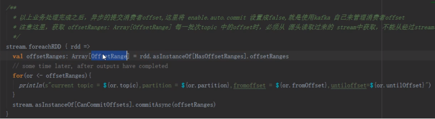